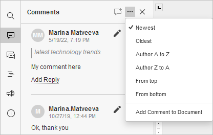

Komentarisanje dokumenata
Uređivač dokumenata omogućava timski rad: delite fajlove i foldere, saradjujte u realnom vremenu, komunicirajte direktno u editoru, čuvajte verzije dokumenata, pregledajte i dodajte izmene bez uređivanja fajla, uporedite i spojite dokumente za lakšu obradu.
U Uređivaču dokumenata možete ostaviti komentare na sadržaj bez direktnog menjanja. Za razliku od ćaskanja, komentari ostaju dok ih ne obrišete.
Ostavljanje komentara i odgovaranje
Da ostavite komentar,
- označite deo teksta za koji želite komentar,
-
pređite na karticu Umetanje ili Saradnja i kliknite na dugme Komentar, ili
koristite ikonu na levom panelu da otvorite panel Komentari, zatim kliknite na dugme Dodaj komentar, ili kliknite na simbol Više i izaberite Dodaj komentar dokumentu da biste ostavili komentar na ceo dokument, ili
kliknite desnim tasterom na izabrani tekst i izaberite Dodaj komentar iz kontekstnog menija, - unesite tekst komentara,
- kliknite na dugme Dodaj komentar.
Komentar će se pojaviti u panelu Komentari sa leve strane. Svaki korisnik može odgovoriti na komentar, postavljati pitanja ili izveštavati o urađenom. Da odgovorite, kliknite na link Dodaj odgovor ispod komentara, unesite odgovor i pritisnite dugme Odgovori.
Ako koristite Strogi režim saradnje, novi komentari drugih korisnika postaju vidljivi tek nakon što kliknete na ikonu u gornjem levom uglu alatne trake.
Isključivanje prikaza komentara
Označeni tekst će biti istaknut u dokumentu. Da biste videli komentar, kliknite unutar označenog teksta. Da isključite ovaj prikaz,
- kliknite na karticu Fajl na gornjoj traci,
- izaberite Napredne postavke,
- isključite opciju Prikaz komentara.
Sada će komentarisani delovi biti istaknuti samo ako kliknete na ikonu .
Upravljanje komentarima
Komentarima možete upravljati putem ikona u balonu komentara ili u panelu Komentari sa leve strane:
-
sortirajte komentare klikom na ikonu :
- po datumu: Najnoviji ili Najstariji (po defaultu)
- po autoru: Autor A-Z ili Autor Z-A
- po lokaciji: Od vrha ili Od dna. Uobičajeni redosled je: komentari na tekst, fusnote, endnote, zaglavlja/podnožja, na ceo dokument.
- po grupama: Svi ili konkretna grupa (ako je funkcionalnost dostupna).

- izmenite selektovani komentar klikom na ikonu ,
- obrišite selektovani komentar klikom na ikonu ,
- zatvorite selektovanu diskusiju klikom na ikonu ako je problem rešen. Diskusija dobija status rešeno. Ponovo je otvorite klikom na .Da sakrijete rešene komentare, u kartici Fajl otvorite Napredne postavke, isključite Prikaz rešених komentara i kliknite Primeni. U tom slučaju, rešeni komentari će se prikazivati samo klikom na .
- da upravljate komentarima grupno, na kartici Saradnja otvorite padajući meni Reši i izaberite opciju: reši trenutne komentare, reši moje komentare ili reši sve komentare u dokumentu.
Dodavanje pominjanja
Pominjanja se mogu dodavati samo komentarima vezanim za tekstualne delove, ne i celom dokumentu.
Prilikom pisanja komentara, opcija pominjanja omogućava da upozorite osobu i da joj se pošalje obaveštenje putem emaila i Talk.
Da biste dodali pomen,
- unesite znak "+" ili "@" bilo gde u tekstu komentara - otvoriće se lista korisnika na portalu. Možete i kucati ime korisnika da biste ubrzali pretragu.
- izaberite korisnika sa liste. Ako fajl nije podeljen sa pomenutim korisnikom, pojaviće se prozor Postavke deljenja sa osnovnim pravom Samo za čitanje. Promenite ako je potrebno.
- kliknite OK.
Komentator će dobiti email obaveštenje o pominjanju, a ukoliko je fajl podeljen, biće obavešten i u okviru sistema.
Brisanje komentara
Da biste obrisali komentare,
- kliknite dugme Ukloni na kartici Saradnja na gornjoj alatnoj traci,
- izaberite opciju iz menija:
- Ukloni trenutni komentar - uklanja izabrani komentar zajedno sa odgovorima (ako postoje),
- Ukloni moje komentare - uklanja komentare koje ste vi dodali zajedno sa odgovorima, ne brišući tuđe komentare,
- Ukloni sve komentare - uklanja sve komentare u dokumentu.
Za zatvaranje panela sa komentarima kliknite ponovo na ikonu na levom panelu.